Projects
ZoomAtt-TODAM Network
Designed two novel attention modules — Zoom-Attention and TODAM — to enhance tiny object detection in CNN-based detectors. Developed ZoomAtt-TODAMNet which surpassed both YOLOv8 and CBAM-integrated baselines.
- +0.49% mAP@50, +2.7% mAP@50:95, +3.81% Recall over CBAM baseline
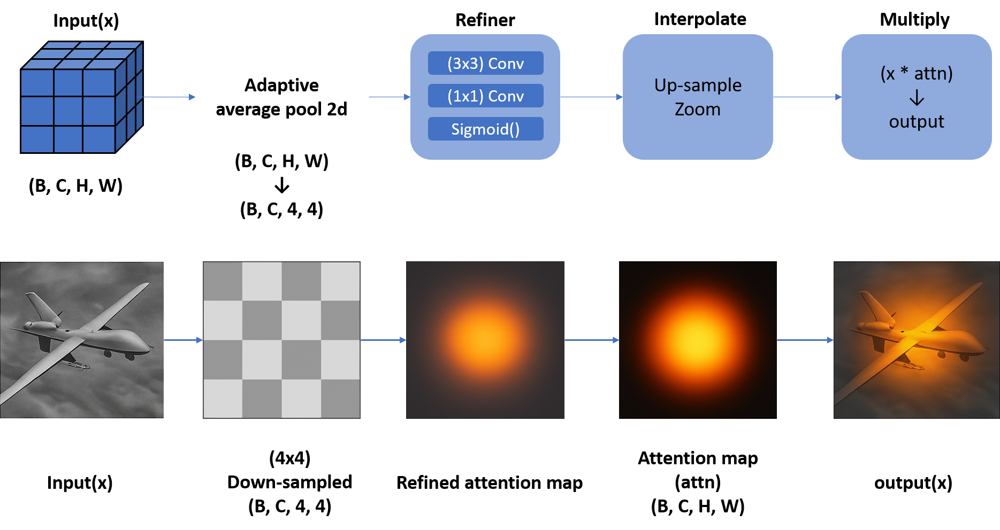
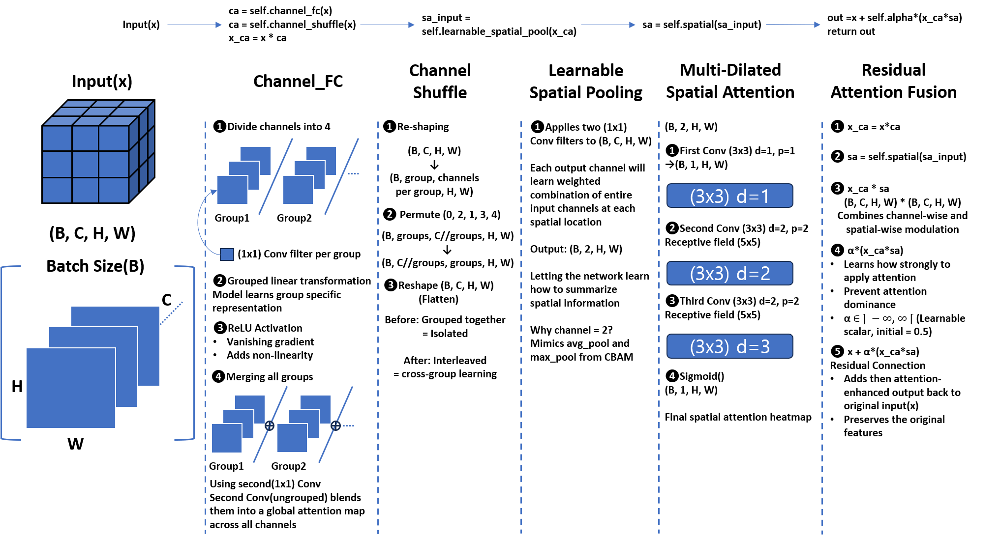
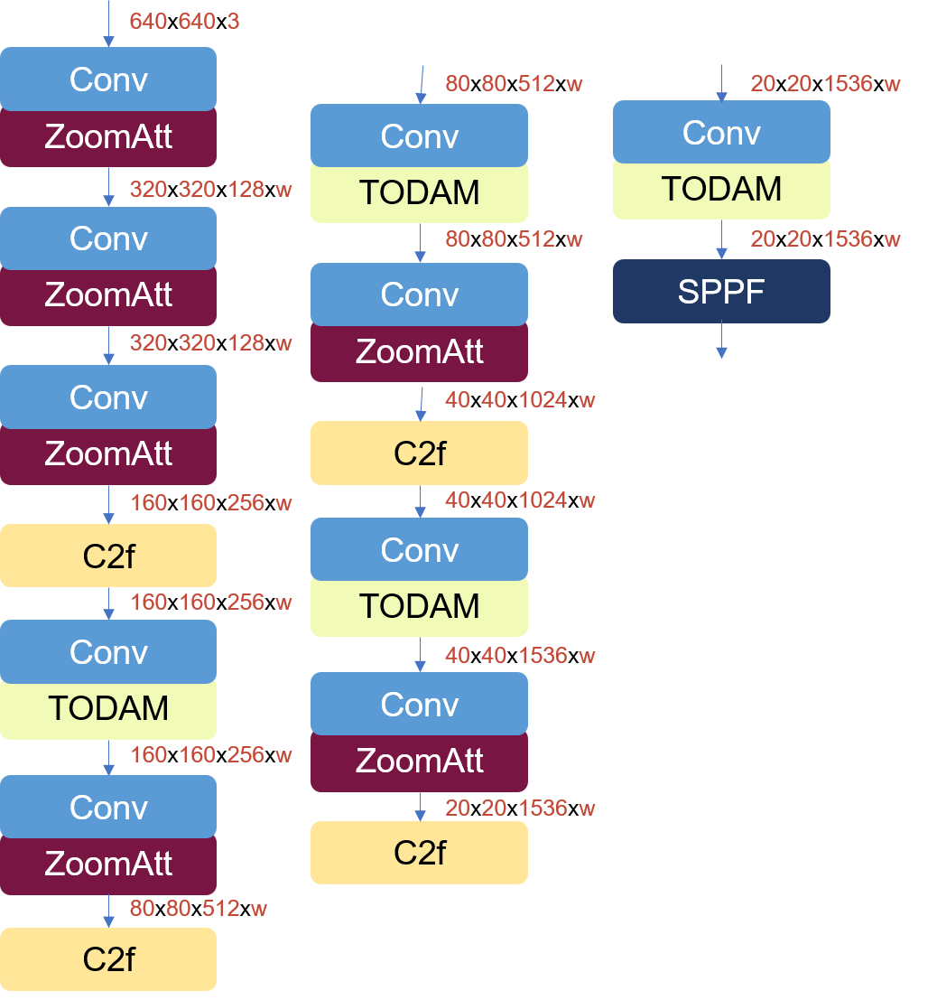
MoonNet – Mixture of Orthogonal Neural-modules Network
Enhanced tiny object detection using YOLOv8 on a modified DOTA-v2.0 dataset (avg object pixel size ≈ 968 px²). Designed a custom backbone integrating SE Block and CBAM with increased channel capacity.
- +27.0% mAP@50 and +26.7% mAP@50:95 over baseline
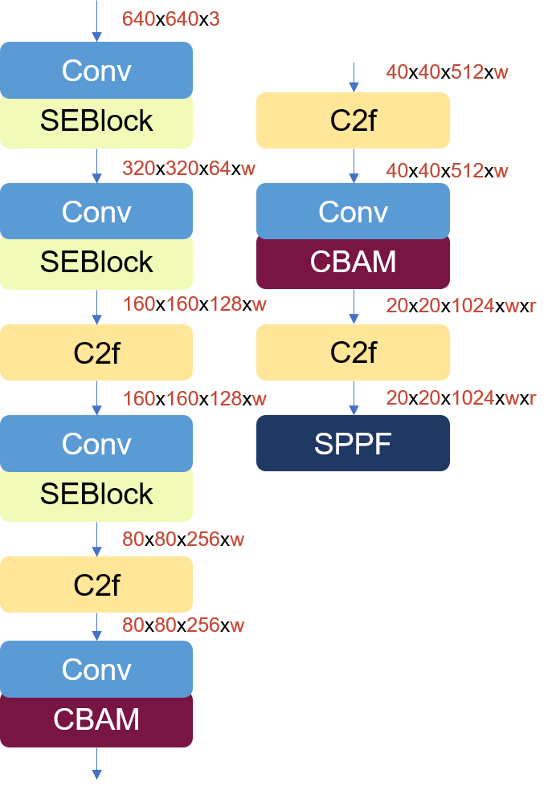
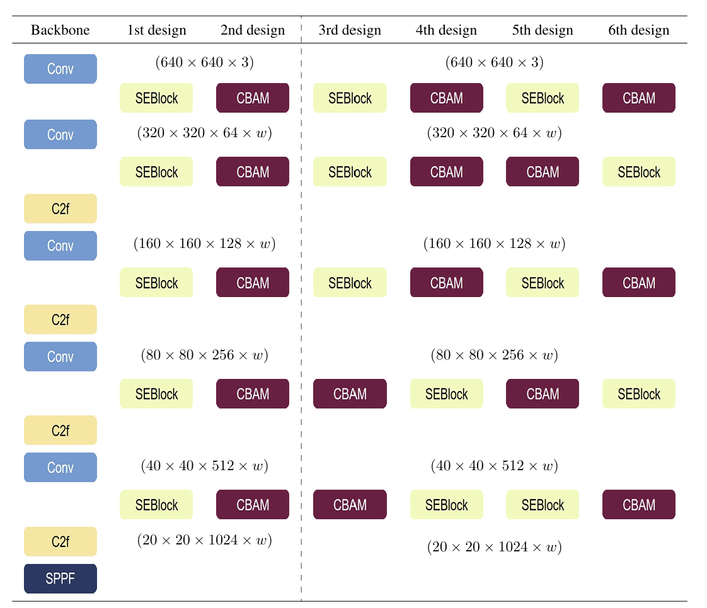
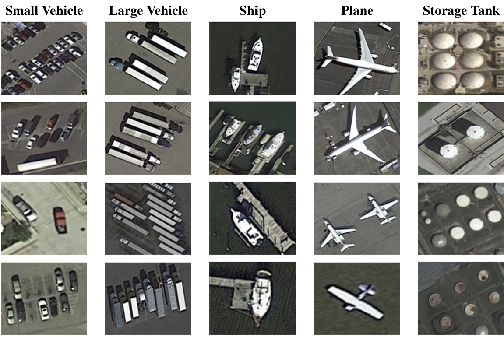
DeepMILES – Deep Learning Model for Integrated Evaluation of Soldier-Specific Performance
A deep learning framework for Human Activity Recognition (HAR) from IMU sensor data, designed to evaluate military-relevant tactical movements. Built on a DeepConvLSTM (CNN + LSTM hybrid) that classifies 6 soldier actions and extracts 128-dimensional embeddings for multi-metric motion quality scoring.
- 6-class tactical action recognition: prone, crawl, cover, kneeling shot, standby, walk
- Multi-metric scoring: Form Similarity (50%), Temporal Consistency (30%), Embedding Smoothness (20%)

TACTIC-L2L – Tactical LLM-to-LLM Battle Evaluation Framework
A framework that pits two local language models against each other in a structured 3-round wargame debate over fictional Korean military tactical scenarios. A GPT model serves as judge, scoring both sides across 7 strategic criteria including logical consistency, COA quality, and adversarial reasoning.
- 3-round debate structure: independent analysis → cross-critique → final revised plan
- Supports DeepSeek-R1, Phi-3.5-mini, Yi-1.5-9B, and Kanana-1.5-8B local models

AI Pet NOVA
Designed an AI pet named NOVA in collaboration with IBM, using Watson Assistant to handle multi-state conversations: listening, replying, and seek-attention states. Won 1st place at the Imperial College London Group Consultancy Project.
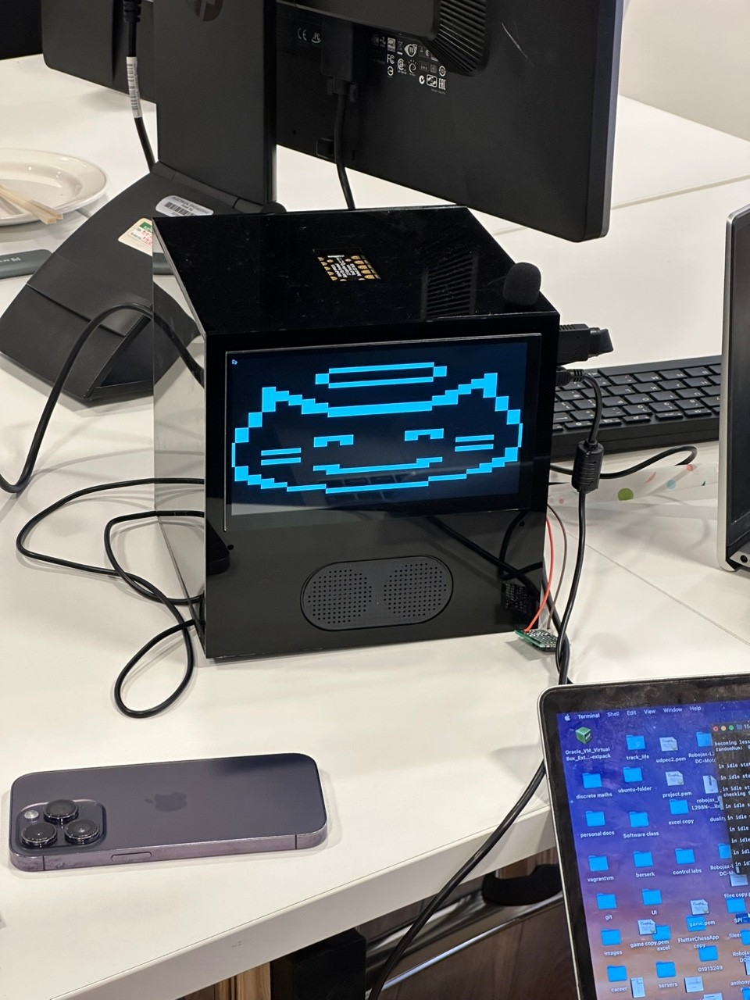
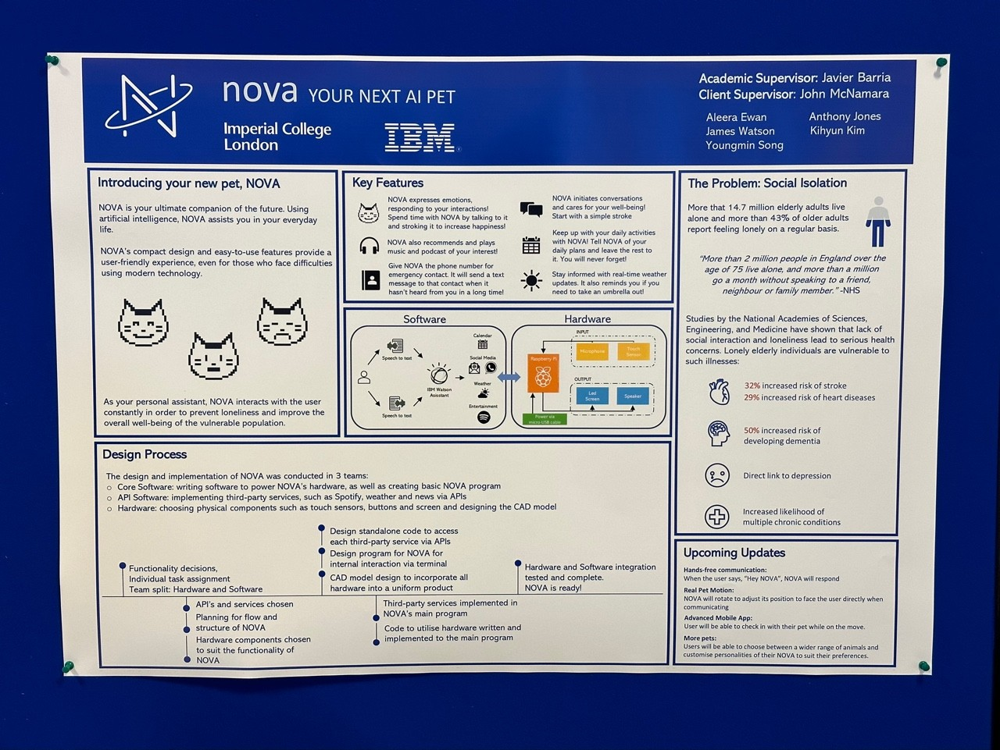
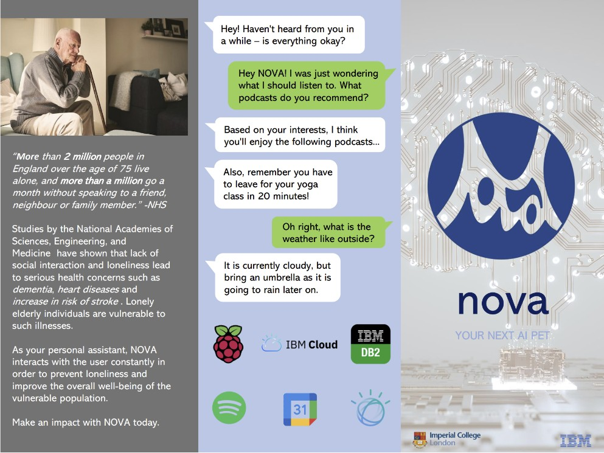
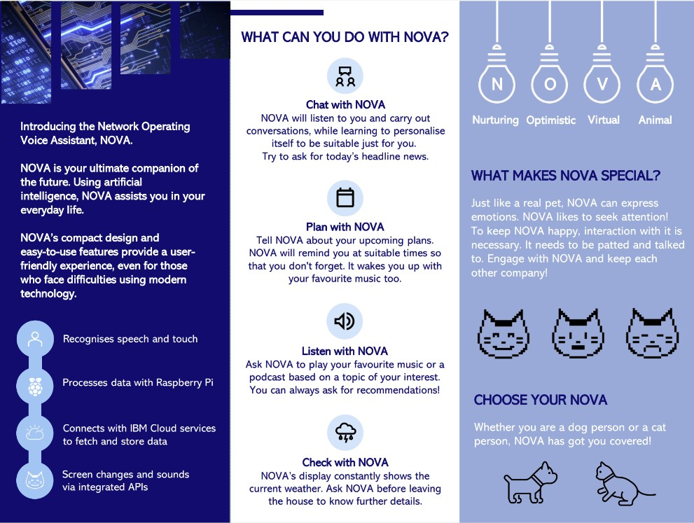
Mars Autonomous Rover
Designed an autonomous rover to detect and collect positional data of colored objects and map a given area. Implemented HSV color conversion for object detection and handled pixel-space calculations with data transfer through registers.
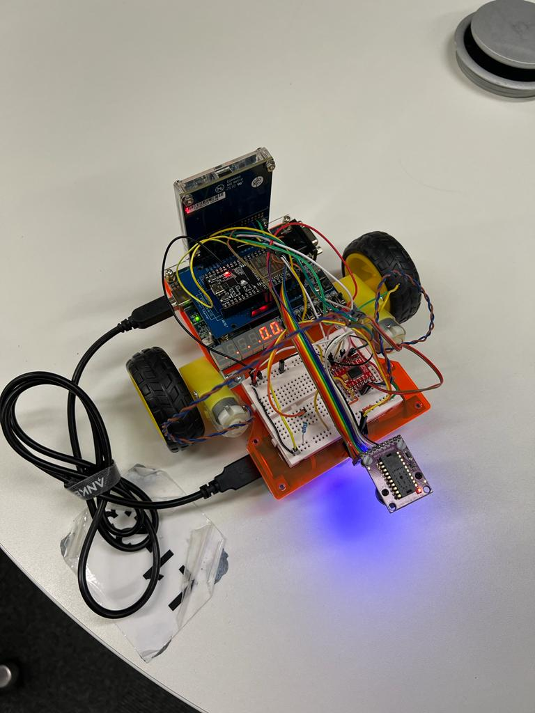
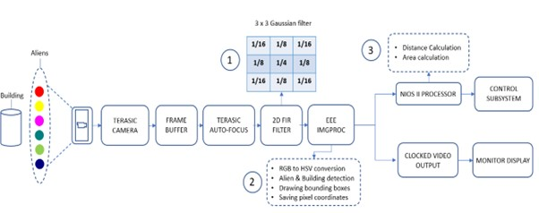
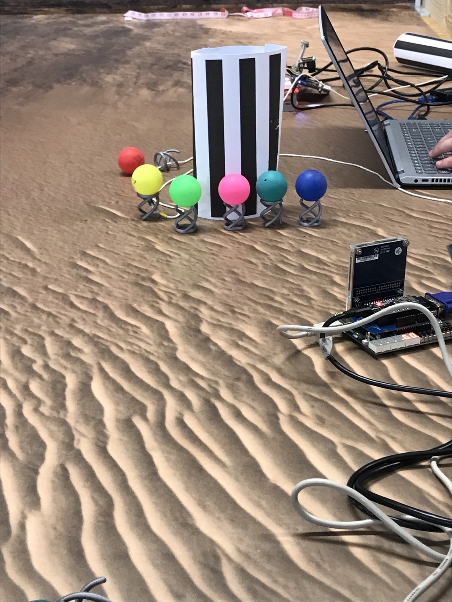